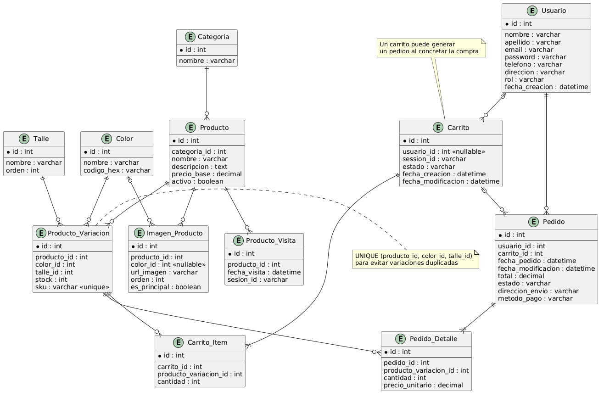
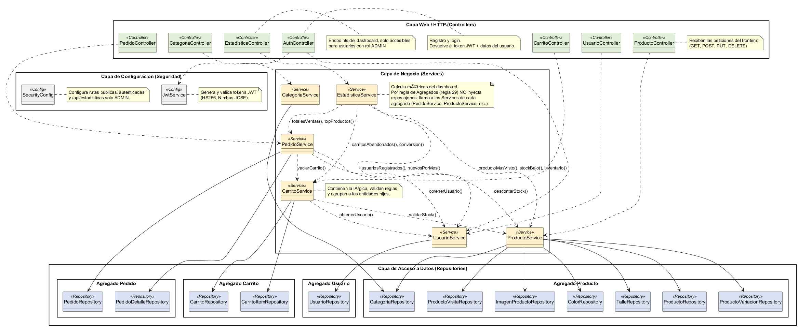

Inicio Proyectos 2 · Malaquita
Malaquita — E-commerce
Una tienda online completa que responde la pregunta que se hace todo comercio: ¿cómo se está vendiendo? Un dashboard de métricas alimentado por endpoints dedicados.
Rol
Diseño y desarrollo fullstack: backend, panel de administración y dashboard de métricas.
Stack
Spring Boot · Angular · Angular Material · MySQL · API REST · JWT
Cifras
4 métricas en dashboard · endpoints dedicados para alimentarlo
Estado
Repo público, sin despliegue público · github.com/matifl3/e-commerce ↗
Qué hace esta tienda
Vender de verdad: catálogo con variantes, carrito, compra y panel de administración: más la mitad operativa que la mayoría olvida, un dashboard con ventas, conversión, stock y carritos abandonados.
Qué construí
- Catálogo de productos con carrito de compras y gestión de variantes.
- Panel de administración para gestionar la tienda.
- Dashboard de métricas: ventas, conversión, stock y carritos abandonados.
- Endpoints dedicados para alimentar el dashboard.
- Tarea programada que detecta carritos abandonados.
- Autenticación con JWT y seguridad por roles.
Bajo el capó
- Diseño por capas: repository / service / controller, documentado en UML.
- Modelo relacional en MySQL mapeado con JPA.
- UI en Angular Material con formularios tipados.
- Datos de ejemplo (seeder) para recorrer todo el flujo.
Artefactos de diseño
El modelo de datos y el diagrama de capas, del propio repo.

